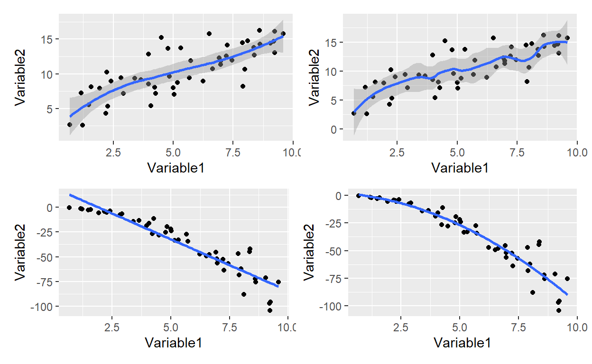
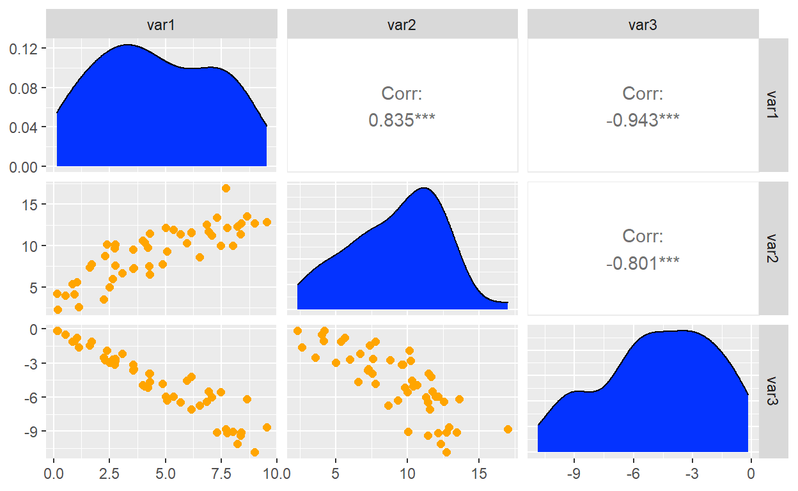
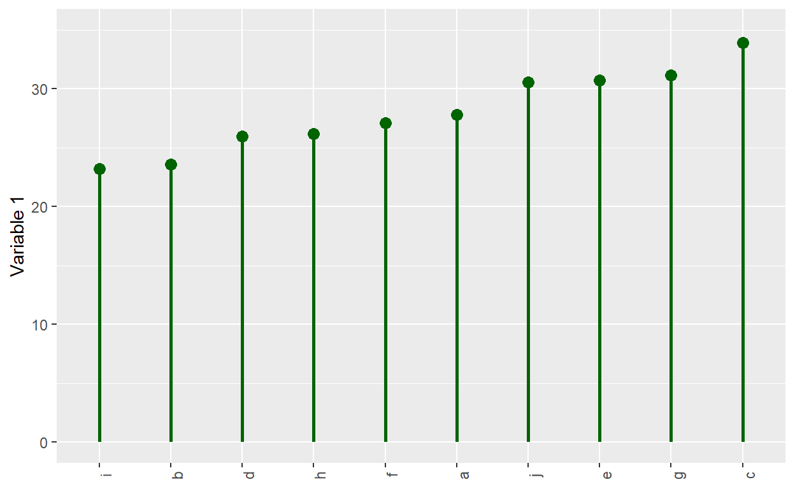
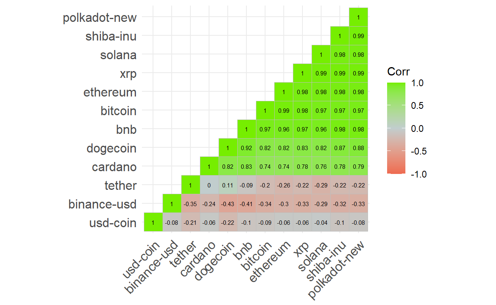
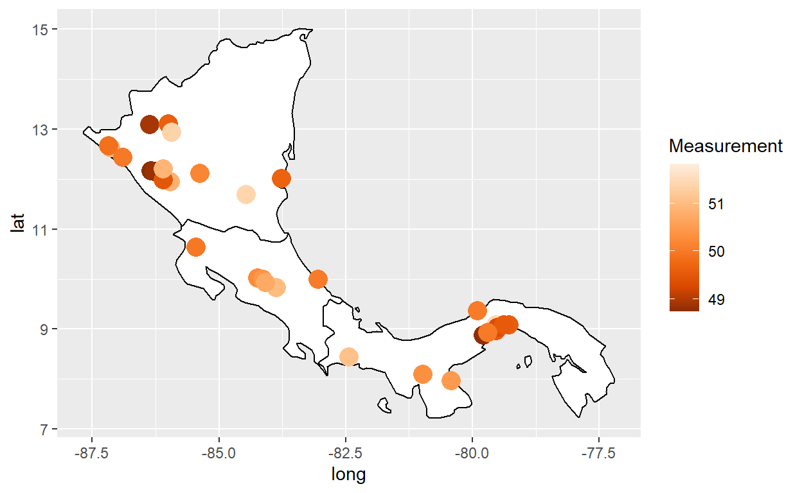
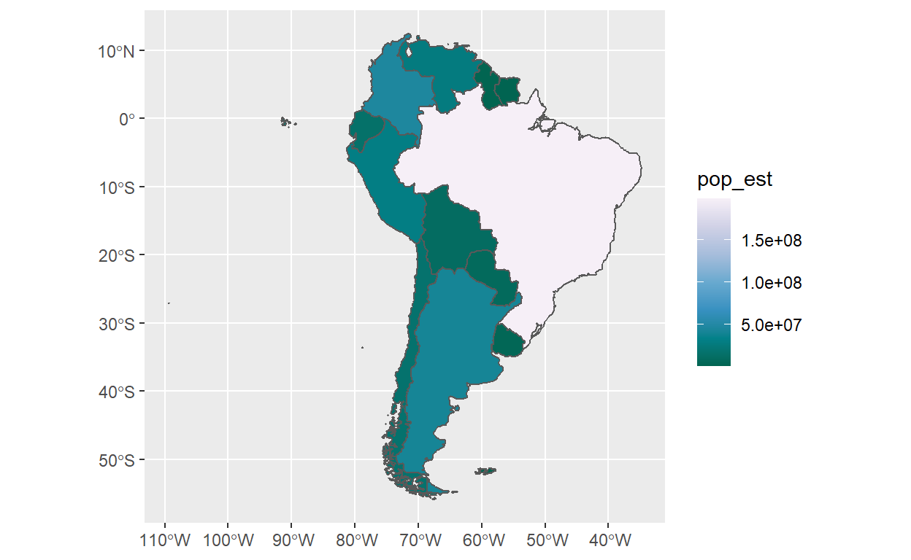

The sequel in the JH dataviz specialization
This three-week course follows Data Visualization in R with ggplot2 (I previously shared my final submission to that prerequisite) and is also taught by the talented Collin Paschall. Despite being dubbed advanced, I perceived the difficulty to be low to moderate, if you are proficient with R. The strength of the course is that it gave me practice in plots that otherwise I’d never make. The weakness is a relative lack of theory. I actually expected this course to go deeper into the grammatical theory, but don’t expect that here. For theory, I tend to rely on ggplot2: elegant graphics for data analysis, and obviously the indispensibele reference. The course refers to Dava Visualization with R and R Graphics Cookbook. Below is a sample (< 50%) of the plots.
Although it’s easy to add a line to a scatterplot, there is an entire library of possibilities under the surface. To the geom_point() we only need to add geom_smooth() where the default is locally weighted polynomial; aka, LOESS. When adding a line to a scatterplot, a key choice is between the more familiar linear model (e.g., “method = lm”) and the default. As illustrated by my fourth plot below, the lm method can plot a polynomial. I collected four plots with the patchwork package and it is indeed “ridiculously simple” to use!
library(patchwork)
p1 <- dat1 %>% ggplot(aes(x = var1, y = var2)) +
geom_point() +
geom_smooth() +
labs(x = "Variable1", y = "Variable2")
p2 <- dat1 %>% ggplot(aes(x = var1, y = var2)) +
geom_point() +
geom_smooth(span = 0.3) +
labs(x = "Variable1", y = "Variable2")
p3 <- dat1 %>% ggplot(aes(x = var1, y = var3)) +
geom_point() +
geom_smooth(method = lm, se = FALSE) +
labs(x = "Variable1", y = "Variable2")
p4 <- dat1 %>% ggplot(aes(x = var1, y = var3)) +
geom_point() +
geom_smooth(method = lm, formula = y ~ poly(x, 2), se = FALSE) +
labs(x = "Variable1", y = "Variable2")
lm_4 <- lm(var3 ~ poly(var1, 2), data = dat1)
lm_4$coefficients (Intercept) poly(var1, 2)1 poly(var1, 2)2
-36.56950 -189.55647 -34.98291 (p1 + p2)/ (p3 + p4) # patchwork layout magic with simple arithmetic
A scatterplot matrix is acheived with the GGally which extends ggplot2.
Notice that ggpairs() generates a matrix where I have defined the
diagonal and lower triangle with ggplot wrapper functions.
my_density <- function(data, mapping, ...){
ggplot(data = data, mapping = mapping) +
geom_density(fill = "#0433ff", ...)
}
my_scatter <- function(data, mapping, ...){
ggplot(data = data, mapping = mapping) +
geom_point(size = 2,
color = "#ffa500")
}
ggpairs(dat2,
diag = list(continuous = my_density),
lower = list(continuous = my_scatter))
I was reminded that a typical barplot is not an efficient use of
ink. This is a lollipop plot; it is similar to a Cleveland dot
plot. It uses geom_segment() for the stem, and it uses geom_point()
for the circle.

The correlation matrix is popular and useful for EDA. This
courses uses ggcorrplot.
To illustrate the package, I decided to retrieve cryptocurrency prices
for the top dozen (in volume) coins. Notice how I used pivot_wider() to
render the dataframe into a wide format that is friendly to the cor()
function.
library(ggcorrplot)
library(lubridate)
# install.packages("crypto2")
# library(crypto2)
# coins_top12 <- crypto_list(only_active = TRUE) %>% arrange(rank) %>% head(12)
# coin_hist <- crypto_history(coins_top12, start_date = "20220101", end_date ="20220131")
# saveRDS(coin_hist, file = "coin_hist.rds")
coin_hist <- readRDS(file = "coin_hist.rds")
coin_hist2 <- coin_hist %>%
mutate(day_n = mday(timestamp)) %>%
select(day_n, slug, close) %>%
pivot_wider(id_cols = day_n, names_from = slug, values_from = close) %>%
select(-day_n)
coin_hist2_r <- cor(coin_hist2)
coin_hist2_r %>% ggcorrplot(type = "lower",
show.diag = TRUE,
hc.order = TRUE,
lab = TRUE, lab_size = 2,
colors = c("coral2", "azure3", "chartreuse2"))
My favorite was the second week’s introduction to geospatial visualization. For reference, Hadley’s chapter is excellent. This is a choropleth with geom_polygon(). Basic maps can be generated with the maps package and geom_polygon().
Here is a bubble map with geom_polygon() + geom_point()
# library(maps)
# my_world_map wrangled in dis-included chunk
my_cities <-maps::world.cities
latin_cities <- my_cities %>% filter(
country.etc == "Costa Rica" |
country.etc == "Panama" |
country.etc == "Nicaragua") %>% filter(
pop > 40000) %>% add_column(Measurement)
my_world_map %>% filter(region == "Costa Rica" | region == "Panama" | region == "Nicaragua") %>%
ggplot(aes(x = long, y = lat, group = group)) +
geom_polygon(color="black",fill="white") +
geom_point(data = latin_cities,aes(x=long, y=lat, group=NULL, color = Measurement), size = 5) +
scale_color_distiller(palette=7)
A better way is to use geom_sf() from the awesome Simple Features for
R.

Plotly is powerful in ways I don’t understand, but is also can simply convert a ggplot2 object. This was the third week. I hope that’s an interesting tour of what you’d learn in this course.
I hope that’s helpful and interesting. I almost forgot: the course page is here